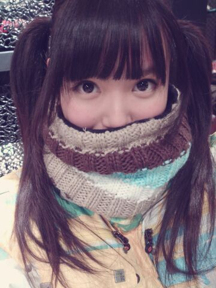
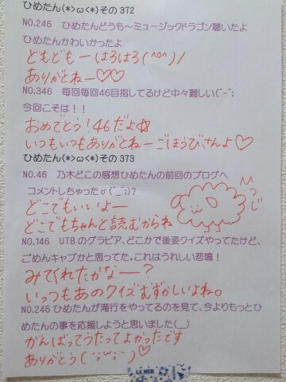

| 2014/03 04 Tue | ひめたん(*>ω<*)そ の414 |
スキーウエア。

あのね、リフトってゆーんですかね
あれめっちゃ怖かった(´；；｀)
揺れる揺れるよおおおおんってなった(´；；｀)
人生初リフトは
玲香 (桜井玲香ちゃん)と
ふたりで乗ったのね
それで、ぎゃーグローブを楽屋に
忘れてきたーってなって
手寒いよーってゆってたら
キャプが自分のグローブを片っぽ取って
ひめたんにくれました。
惚れたね(〃∀〃)
ロマンスって
こーやって生まれるんだなって
17さいながらに思った！
ぼーいずのみなさん
もしリフトにのって
もし隣のおにゃのこが座って
もしグローブ忘れてたら
やってみてー♪♪
日曜日は7th最後の個握でした
ごめん！
写メ撮るの忘れてた！笑
淡いぴんくのワンピースでございました

7thももう終わりかあー
今回のシングルでは
本当にたくさんの方に来ていただいて
はじめましての方は会えて嬉しかったし
いつもましての方はもっと仲良くなれた気するし
お久しぶりの方は帰ってきてくれて
みなさん本当にありがとうございました＼(^O^)／
初めて選抜メンバーに入れて
おめでとう！待ってたよ！って
たくさんの方に言っていただいて
やっぱしあれだねー
握手会だと直に伝わってくるものがあるよね
一緒に喜んでもらえてひめたん幸せでした＊
これからもがんばりますので
またぜひ会いに来てくださいませ
いつでも待ってますよヽ(´・ω・｀ヽ)
あっそうそう
8thの個別握手会ですが
京都名古屋は２部、関東圏は３部になりましたっ
もっと握手したいなーてゆひめたんの気持ちと
みなさんのあたたかい応援が
形になったのかな！ありがとうございます！
次からはもっと握手できるねー
やだー楽しみどうしようー♪♪
関東の握手会は
４部・５部から
１部・２部・３部の参加になるってことで
時間がガラッと変わってしまいました
時間遅くていけなかったんだよーって方は
早くなったからね！
終電とか気にしないでよくなりましたよ( ^O^ )
逆に朝が苦手な方は
がんばって早起きしてみてください；；
せっかくの休日なのにごめんね；；
あっ
1ST BIRTHDAYLIVE BDの方は
おうちに届きましたかねー？
ブルーレイ。
ひめたんは持ってないブルーレイ
こちらも感想待ってまーすよー
それとっ
ドワンゴさんの方で
乃木坂ちゃんとお電話できます＼(^O^)／ばっほー
ひめたんの番号にお電話かけてくれたら
部活のマネージャーさんの後輩である
ひめたんが出ます！
まってるよー♪

明日は「季刊 乃木坂vo.1 早春」発売！
ぜひぜひみなさん
お手に取ってみてくださいねー
感想も教えてね
3月7日は写真集お渡し会です！
ひめたんはC列で
かなりん、若月と待ってますよー♪

 ひめたんはおこた(こたつ)派？
ひめたんはおこた(こたつ)派？
それとも電気カーペット派？
地元にいるときは電気カーペット派だったなあ
おこたで寝るのもいろいろ大変でしょー？
寝返りが打てないのよね
最近忙しくてコメントできてないんだけど
さびしくないですか ？？？
いやーほんとにねー
ひめたんは寂しくて寂しくて
毎晩枕を濡らしながら寝てますよY(・∀・)Yかに
ひめたんは凄く女の子らしくて、
まさに乃木坂のアイドルって感じがします！
そんなひめたんに質問です！
恐竜はあんなに強そうなのに
どうして絶滅したんですか？
うはーなんてゆか雑だなー
とりあえず褒めとけって魂胆
ひめきゅんさんとしては満点なんだけどねー(笑)
乃木坂のアイドルだなんて恐れ多い。
でもすごく嬉しい！
にやにやしちゃうっんふふふ
寝るとき靴下に履きますか？
ちなみに僕は右だけ履いてます(笑)
なぜなぜなぜなぜなのさ
ひめたんは夏場は履かないし
冬場は履きますよー
履いて寝るじゃーん？そいで朝になったら
よく片っぽなくなるんだよね(´；；｀)
ひめたんのブログの
コメント欄下２ケタに46を踏んだ方へ
手書きでコメ返するコーナー
＼ ひめたん46 ／

いつもコメントたくさん
ありがとうございます
握手会とかで
「コメント読んでないでしょ？」とか
たーまーに言われるんだけどね
口下手だから誤解させちゃうことも
あるかもしれないからごめんなさいだけど
ちゃんと読んでるよー(´；；｀)うー
おーっと
いま寝ぼけてスマホの画面タッチしてたらしくて
はっと目が覚めたら
マネージャーさんに電話かける一歩手前だった
みんなもー気をつけてねー
∩
 ∩
∩
(＊´・ω・＊)
コメント(480)
2014/03/04 23:54